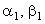
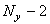
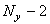

|
6.1. Характеристика первой подсхемы.
Первая подсхема (7.7) схемы расщепления, являясь аналогом
неявной разностной схемы для одномерного дифференциального уравнения параболического типа,
обладает всеми свойствами последней: она абсолютно устойчива, решается с помощью метода прогонки.
Приведём подсхему (7.7) к виду (4.10), удобному для использования метода прогонки:
Следовательно, коэффициенты, соответствующие уравнению (4.10), имеют вид:
Легко видеть, что для первой подсхемы (7.7) схемы расщепления достаточное условие
сходимости прогонки (4.16) выполняется:
Рекуррентное прогоночное соотношение для первой подсхемы (7.7) имеет вид:
Прогоночные коэффициенты определяются согласно соотношениям (4.13):
Для определения значений прогоночных коэффициентов на 1-м шаге, т.е. ,
и решения на правой границе используются граничные условия по координате x.
Методики определения, а также последовательность вычислений (метод прогонки) аналогичны описанным ранее. Отличие состоит лишь в том,
что соотношения (7.9) и (7.10) включают переменную k, поэтому необходимо задать внешний цикл
по этой переменной:
следовательно, при решении первой подсхемы (7.7) (т.е. на первом полушаге интервала  ) метод прогонки
будет использован  раза. ) метод прогонки
будет использован  раза.
Результатом решения первой подсхемы (7.7) схемы расщепления являются
значения функции u на шаге по времени (n + 1/2), необходимые для решения
второй подсхемы (7.8). Однако следует отметить, что поскольку каждая из подсхем (7.7), (7.8)
по отдельности не аппроксимирует исходное дифференциальное уравнение (7.1) (аппроксимация
достигается только в результате последовательного решения обеих подсхем), оценка погрешности
значений функции u на шаге по времени (n + 1/2) не представляется возможной. Близость к истинным
значениям может быть гарантирована только для значений функции u на (n + 1)-ом шаге по времени.
|